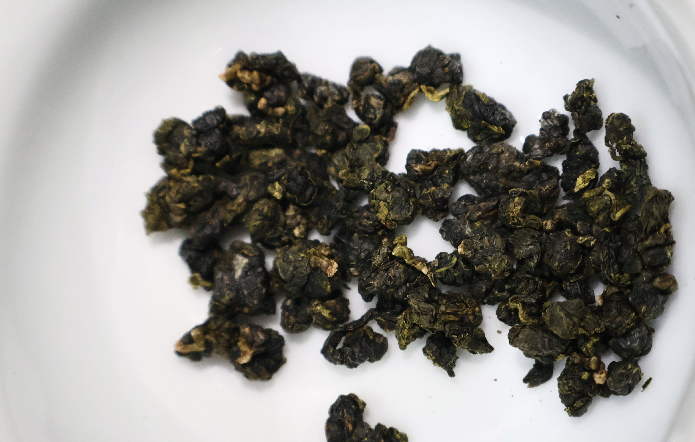

細緻採摘
依季節與葉況判斷採摘節點， 保留高山烏龍應有的鮮活、乾淨與細緻輪廓。

Nantou · Shanlinxi · Family Craft
來自南投杉林溪茶區，延續家族製茶工藝。 以節氣、海拔與時間，淬鍊出高山烏龍的清雅香氣、 穩定口感與深長回甘。
每年依節氣更新品項， 保留不同季節最能體現山頭氣的風味輪廓。
Brand Essence
香盛專注於高山烏龍的純粹表現。 我們重視的不只是香氣與口感， 更是每一季茶葉背後的節氣、工藝判斷與穩定性。
從茶園到製程，每一道工序都關乎最終杯中的層次。 真正體現山頭氣的地方，不只是海拔， 而是對時間、製程與細節的理解。

Origin
雲霧、海拔與日夜溫差， 共同塑造高山烏龍乾淨、細緻、帶有山韻的輪廓。
在杉林溪，茶葉緩慢生長， 累積更穩定的內質與更清雅的香氣。 這不只是產地條件的差異， 更是真正體現山頭氣的地方。
Craftsmanship
從採摘、萎凋、揉捻到焙火， 每一步都不是公式，而是經驗、判斷與細節。
依季節與葉況判斷採摘節點， 保留高山烏龍應有的鮮活、乾淨與細緻輪廓。
經由萎凋、揉捻與焙火調整層次， 讓茶湯更穩定，口感更圓潤，氣韻更完整。
追求的不只是香，而是入口到尾韻之間的完整節奏： 花香、山韻、厚度與回甘。
Seasonal Selection
以節氣為軸，保留每一季高山烏龍最適合被記住的樣子。


From Shanlinxi, crafted with season, altitude, and time.
Assurance
從茶葉來源到製程管理， 香盛重視每一批茶款的穩定性、清晰來源與品質信任感。
可於此放置檢驗項目、批次資訊或檢驗報告摘要， 讓品牌信任感更完整。
可於此放置產地來源、茶區資訊、批號或追溯系統說明， 強化消費者對來源透明度的理解。
南投縣竹山鎮大鞍里深坑巷6號
Contact
若你希望了解當季茶款、品牌合作、茶款介紹或訂購方式， 歡迎透過 Instagram 或 Email 與我們聯繫。